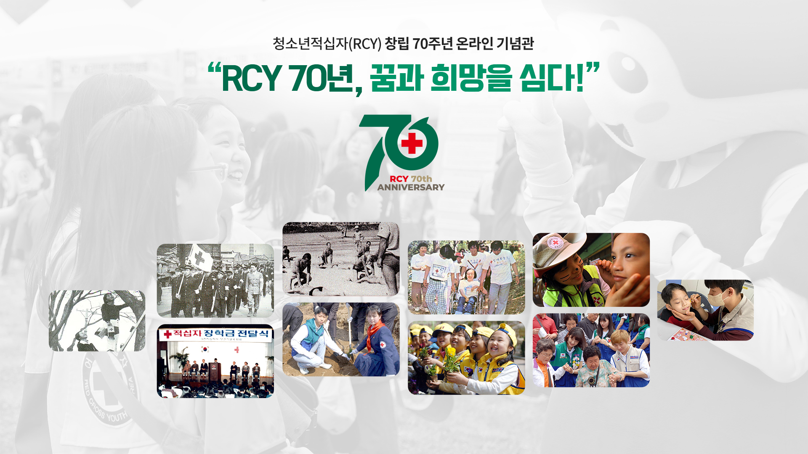
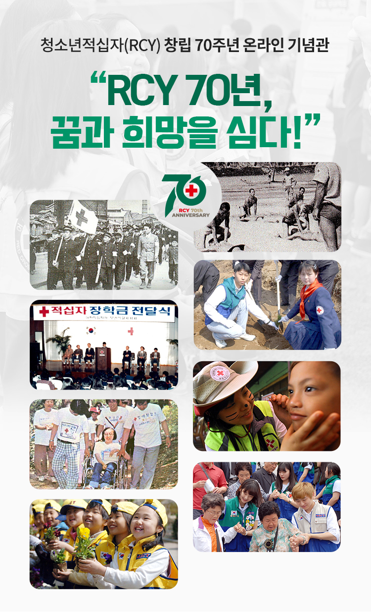
RCY 70주년
엠블럼
* 본 엠블럼은 아이프칠드런의 재능기부로 제작되었습니다.
RCY 역사
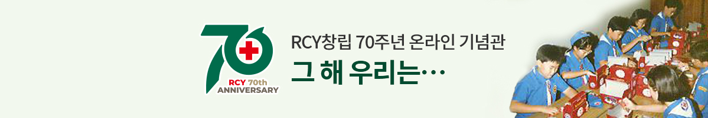 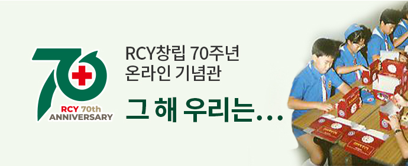1950년대~
1950년대
- 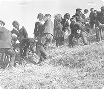
1953년 부산에서 나무를 심는 청소 년적십자
- 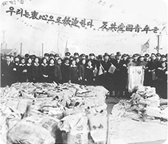
1953년 반공애국포로 환영행사
- 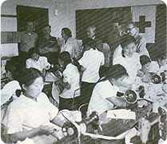
1953년 재봉봉사를 하고있는 청소 년적십자
- 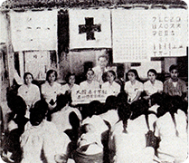
JRC단원들의 농촌계몽활동
- 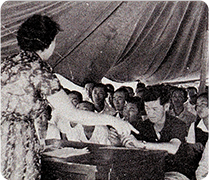
1955년 제3회 JRC간부단원 연수회
- 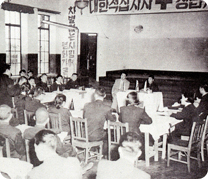
1956년 중앙학생협의회 결성총회
- 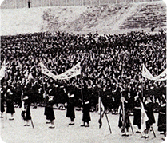
1959년 5.8 JRC대회
- 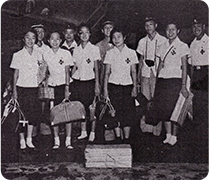
1956년 국제청소년적십자 리더십 강습회
- 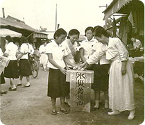
1959년 충청남도 수재의연금 모금 활동
- 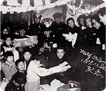
1959년 크리스마스 위문활동
- 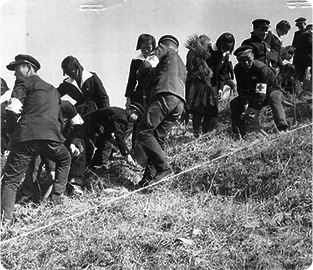
1953년 부산에서 나무를 심는 청소 년적십자
- 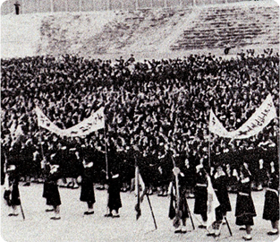
1959년 5.8 JRC대회
1960년대~
1960년대
- 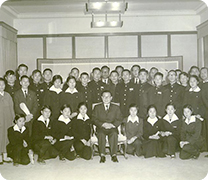
1960년 중앙학생협의회 후 윤보선 대통령 접견
- 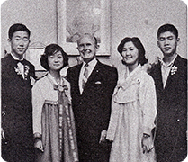
1962년 VISTA에 참가한 JRC단원 들
- 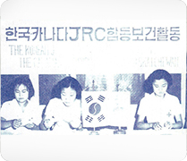
1966년 합동보건활동
- 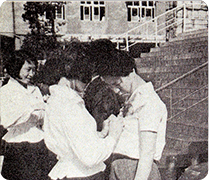
1965년 5.15 스승의 날 제정
- 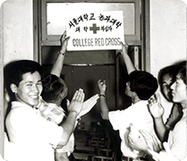
1966년 서울대학교에 처음 창립된 대학적십자
- 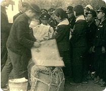
1961년 사랑의 쌀 한줌 모으기 운동
- 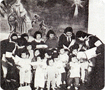
1965년 사랑의 주머니 전달식
- 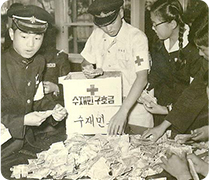
수재민을 돕기 위해 의연금 모금에 나선 단원들
- 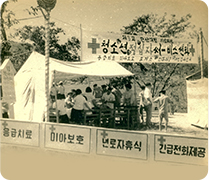
1964년 간이 응급구호센터 운영
- 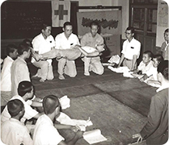
1961년제1회 응급처치법 강습회
- 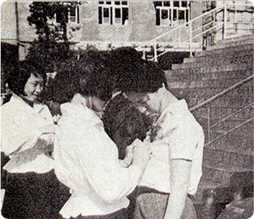
1965년 5.15 스승의 날 제정
- 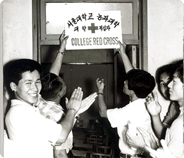
1966년 서울대학교에 처음 창립된 대학적십자
1970-1980년대
- 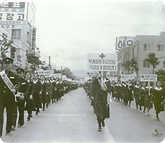
1972년 환경보호캠페인
- 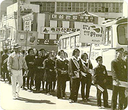
1974년 헌혈캠페인
- 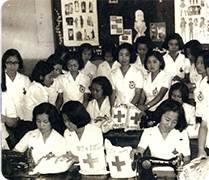
1973~4년 국제구호활동 '사랑의 주머니'
- 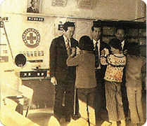
1974년 스승의 날
- 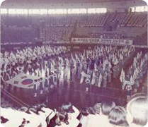
1978 서울지사 합동입단선서식
- 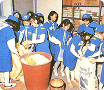
1983년 사랑의 쌀 한줌 모으기 운동
- 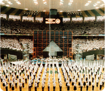
1983년 RCY창립 30주년 전국합동 입단선서식
- 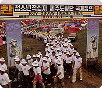
1983년 청소년적십자 제주도횡단 국제캠프
- 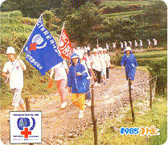
1985년 세계청소년의해기념 평화 순례 행군
- 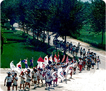
1987년 평화기원 서울 국제트렉캠프
- 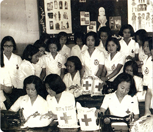
1973~4년 국제구호활동 '사랑의 주머니'
1983년 사랑의 쌀 한줌 모으 기 운동
1990-2000년대
- 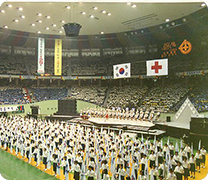
1993년 RCY창립 40주년 전국합동 입단선서식
- 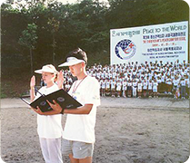
1991년 제3회 RCY 서울국제평화 캠프
- 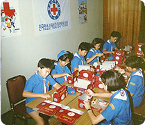
1990년 RCY우정의 선물상자 제작
- 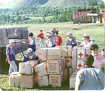
1997년 제8차 몽골 해외봉사활동
- 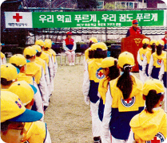
1999년 우리학교 푸르게 가꾸기 운동
- 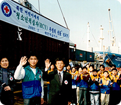
2002년 북한어린이 우정의선물 상자 전달식
- 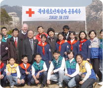
2003년 남북한 RCY 우정의 나무 심기 행사
2003년 RCY창립 50주년 전국합동 입단선서식
2007년 RCY 글로벌리더프로젝트
2006년 대학적십자 몽골 세계로 대장정
1990년 RCY우정의 선물상자 제작
2003년 남북한 RCY 우정의 나무 심기 행사
2010-2020년대
2010년 아이티 대지진 이재민 돕기 활동
2012년 스승의 날 캠페인
응급처치법 경연대회
2011년 베트남 해외봉사활동
2012년 국제적십자사연맹 모의 총회
2021년 청소년적십자 마스크쓰GO 캠페인
2022년 인도주의 인성교육
2022년 사제동행 빵나눔활동
2022년 찾아가는 재난안전교육 실시
2023년 캄보디아 해외봉사활동
2012년 국제적십자사연맹 모의총회
2023년 캄보디아 해외봉사 활동
1950년대
- 1953년 4월 5일, 한국 전쟁 중 남녀 중고등학생이 부산 암남동 천마산에 나무를 처음 심었다.
- 이후 매년 식목일에 RCY단원들은 나무를 심었고, 1959년까지 625,533그루를 심었다.
- 1955년에 들어서면서, 일제 수탈과 한국전쟁으로 빈곤과 무지 속에서 희망 없이 살아가던 농민들을 위해 농촌계몽활동을 시작했다.
- 1959년부터 적십자운동의 창시자 앙리뒤낭의 생일인 5월 8일을 기념하는 대규모 행사를 시작했다.
1960년대
- 1961년 부산·경남지사 청소년적십자 단원들은 ‘사랑의 쌀 한 줌 모이기 운동’을 시작했다.
- 1963년 제12차 청소년적십자중앙학생협의회에서 자발적으로 은사의 날(5.24)을 제정하는 결의문을 채택하였고, 이후 1964년 스승의 날 행사가 실시 되었다. 이후 1965년, 제15차 청소년적십자중앙학생협의회에서 5월 15일로 변경하여 오늘까지 이어지고 있다.
- 1964년 10월 12일 스위스 제네바에서 열린 적십자사연맹 집행위원회에서 한국청소년적십자는 청소년적십자 자문위원국으로 선출되어 국제적 위상을 높였다.
1970~1980년대
- 1973년 ‘우리들의 환경보호 적십자가 앞장선다.’는 구호아래 환경보전에 적극 참여했다.
- 1970년대 매혈을 지양하고 순수 헌혈문화 조성을 위해 전국적인 헌혈운동에 앞장섰다.
- 1981년 UN이 정한 ‘세계 장애인의 해’를 맞이하여 청소년적십자는 전국적으로 장애인돕기 자선바자회, 장애인캠프 등을 개최했다.
- 1983년 RCY를 주축으로 ‘아프리카 기근아동 돕기 사랑의 쌀 한 줌 모으기 운동’을 전개하고, 약 5억원의 성금을 모아 에티오피아, 니제르 등에 분유, 담요 등을 지원했다.
- 1983년 RCY 창립 30주년을 맞아 서울잠실체육관에서 전국합동입단선서식이 거행되었다.
1990~2000년대
- 1993년 5월 5일 서울잠실체육관에서 RCY 창립 40주년 기념 전국합동입단선서식이 진행되었다.
- 1993년 무주 덕유대종합야영장에서 RCY 창립 40주년 기념 전국캠프가 열려 10,692명의 단원과 서울지사가 개최하는 RCY 국제평화캠프를 통해 외국 단원 및 지도자 98명이 함께했다.
- RCY 창립 50주년을 기념하여 2003년 3월 22일 남북RCY 단원 대표들이 금강산에서 만나 ‘남북한 RCY 우정의 나무심기’행사를 가졌으며 남한 18명, 북한 23명 등이 참여했다.
- 2007년 단원들이 글로벌 인도주의 리더로 성장할 수 있는 RCY 글로벌 리더프로젝트를 통해 단원들은 UN본부의 반기문 사무총장과 면담을 하고, 미국국회의사당 등을 견학했다.
- 베트남, 라오스, 몽골, 캄보디아 등 다양한 국가의 청소년들과 함께 해외봉사에 참여했다.
2010~2020년대
- 2013년 서울광장에서 청소년 푸쉬업 러브업(Push up Love up) 대회를 통해 초등 4학년부터 대학생 3,000명이 푸쉬업을 했고, 아동, 노인, 다문화가정, 북한이주민 등 위기의 가정에 푸쉬업 횟수만큼 기부금을 지원했다.
- 2014년 8월 5일부터 8일까지 4일간 ‘한반도의 평화를 외치다’라는 주제로 2014년도 청소년적십자(RCY) 전국캠프를 개최했으며 RCY단원과 지도교사 등 1천여명이 참가한 가운데 전통문화, 통일안보, 자연환경 등 다양한 분야의 체험활동을 진행했다.
- 2020년 코로나19가 유행하여 코로나19 예방수칙 및 사회적 거리두기 안내를 위한 ‘코로나19 ZERO 캠페인’을 펼쳤고, 코로나19로 인한 혈액 보유량 급감을 극복하기 위해 헌혈캠페인을 펼쳤다.
- 현재 2023년 RCY 70주년을 맞이하여 70주년 기념비 제막식 및 전국 합동입단선서식과 70주년 기념사업을 진행하고 있는 중이다.
70주년 기념사업
목적
RCY 70주년을 맞이하여 70년의 역사,
그 간의 활동을 재조명하고, 변화하는 환경에
부합하는
RCY 활동 리뉴얼을 통해
새롭게 도약하는 RCY의 원년을 선포
추진계획
70년의 RCY을 기념하는 기념행사
(RCY HISTORY!)와 함께 RCY 중기 계획에
기반한
프로그램 리뉴얼(RCY ACTIVITY!)을
통해 RCY의 새로운 도약의 계기를 마련
view more